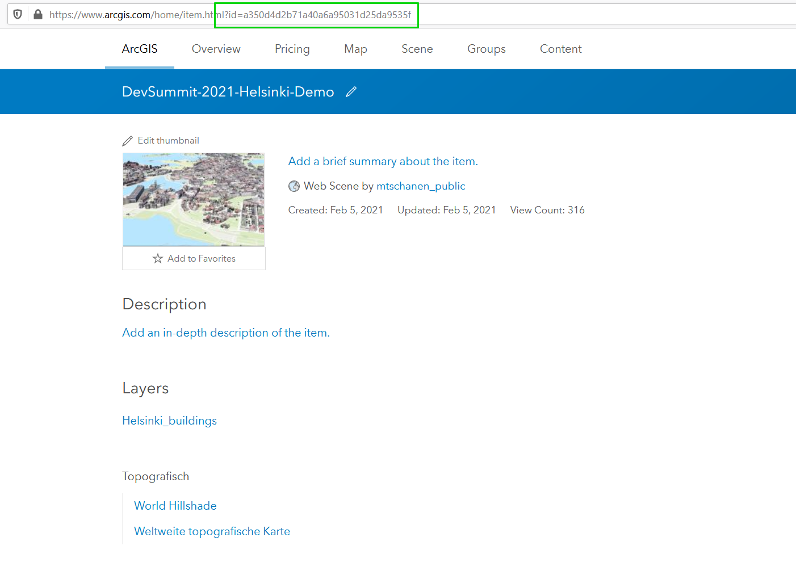
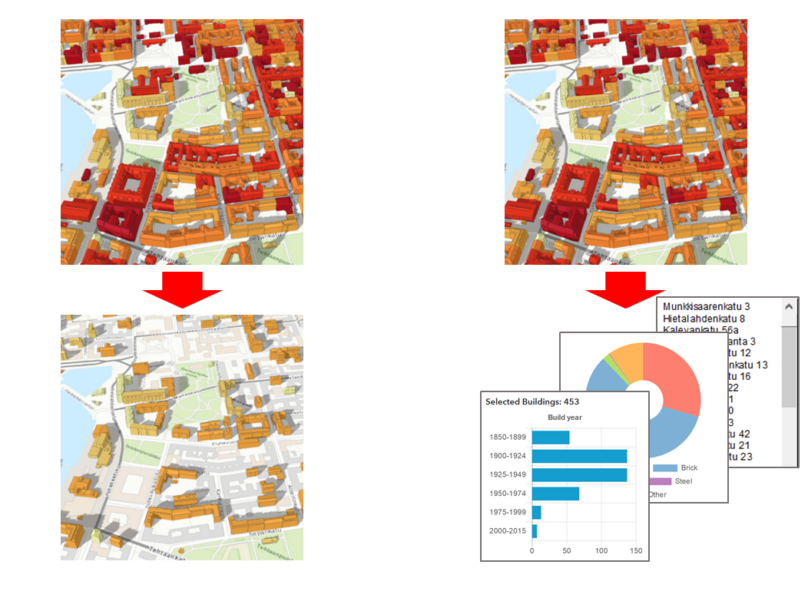
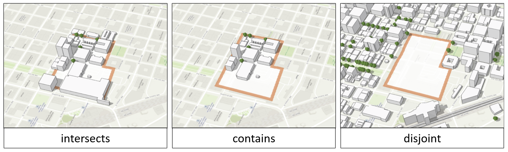

<!DOCTYPE html>
<html lang="en">
  <head>
    <meta charset="utf-8" />
    <meta name="viewport" content="width=device-width, initial-scale=1.0, maximum-scale=1.0, user-scalable=no" />

    <title>Esri Developer Summit 2021: ArcGIS API for JavaScript Presentations</title>
    <meta property="og:title" content="Esri Developer Summit 2021: ArcGIS API for JavaScript Presentations" />
    <meta property="og:type" content="website" />
    <meta property="og:image" content="https://esri.github.io/devsummit-2021-3D-jsapi/featured-slide.jpg" />
    <meta property="og:url" content="https://esri.github.io/devsummit-2021-3D-jsapi" />
    <meta name="description" content="Esri Developer Summit 2021: ArcGIS API for JavaScript Presentations">
    <meta property="og:description" content="Esri Developer Summit 2021: ArcGIS API for JavaScript Presentations">
    <link rel="stylesheet" href="./css/reveal.css" />
    <link rel="stylesheet" href="./css/theme/black.css" id="theme" />
    <!-- <link rel="stylesheet" href="./css/highlight/railscasts.css" /> -->
    <link rel="stylesheet" href="./css/print/paper.css" type="text/css" media="print" />
    <link rel="stylesheet" href="./assets/style.css" />

    <script src="https://cdnjs.cloudflare.com/ajax/libs/animejs/2.0.2/anime.min.js"></script>
  </head>
  <body>
    <div class="reveal">
      <div class="slides"><section  data-markdown><script type="text/template"><!-- .slide: data-background="images/bg-1.png" data-title="add-scene-layer" class="title" -->

# ArcGIS API for JavaScript

## Client-side 3D analysis

Hugo Campos, Esri R&D Center Zürich \
Miriam Tschanen, Esri R&D Center Zürich

2021 ESRI DEVELOPER SUMMIT​ | Palm Springs, CA
</script></section><section  data-markdown><script type="text/template">
<!-- .slide: data-background="images/bg-2.png" data-title="overview"-->

## Overview

- Analysis Widgets
 - Measurement Tools
 - Slice
 - Line of Sight
 - Elevation Profiles
- Querying and Filtering a SceneLayer
 - by Attributes
 - by Geometry
</script></section><section  data-markdown><script type="text/template">
<!-- .slide: data-background="images/bg-3.png" data-title="section-analysis-widgets" -->

## Analysis Widgets

### Measurements, Slice, Line of Sight, Elevation Profile

https://developers.arcgis.com/javascript/latest/custom-widget/#viewmodel-pattern
</script></section><section  data-markdown><script type="text/template">
<!-- .slide: data-background="images/bg-3.png" data-title="section-analysis-widgets" -->


</script></section><section  data-markdown><script type="text/template">
<!-- .slide: data-background="images/bg-3.png" data-title="section-analysis-widgets" -->


</script></section><section  data-markdown><script type="text/template">
<!-- .slide: data-background="images/bg-2.png" data-title="direct-line-measurement" -->

## DirectLineMeasurement3D

<div class="two-columns">
  <div class="left-column">
    <div class="code-snippet">
      <button class="play" id="direct-line-measurement-1"></button>

<pre><code class="lang-ts">const widget = new DirectLineMeasurement3D({ view });
view.ui.add(widget, "top-right");
</code></pre>

  </div>

  <div class="code-snippet fragment">
      <button class="play" id="direct-line-measurement-2"></button>

<pre><code class="lang-ts">widget.viewModel.unit = "kilometers";
widget.viewModel.unitOptions = ["meters", "kilometers"];
</code></pre>

  </div>

  </div>
  <div class="right-column">
    <iframe data-src="./samples/client-side-3d-analysis/direct-line-measurement-3d/" ></iframe>
  </div>
</div>
</script></section><section  data-markdown><script type="text/template">
<!-- .slide: data-background="images/bg-2.png" data-title="slice" -->

## Slice

<div class="two-columns">
  <div class="left-column">

<div class="code-snippet">
<button class="play" id="slice-1"></button>
<pre><code class="lang-ts">const widget = new Slice({ view });
view.ui.add(widget, "top-right");
</code></pre>
</div>

<div class="code-snippet fragment">
<button class="play" id="slice-2"></button>
<pre><code class="lang-ts">widget.viewModel.shape = new SlicePlane({
  position: {
    spatialReference: { wkid: 4326 },
    x: -117.18,
    y: 34.05,
    z: 413.94,
  },
  heading: 180.46,
  tilt: 269.99,
  width: 49.04,
  height: 33.20,
});
<br>
widget.viewModel.start();
</code></pre></div>

  </div>
  <div class="right-column">
    <iframe data-src="./samples/client-side-3d-analysis/slice/" ></iframe>
  </div>
</div>
</script></section><section  data-markdown><script type="text/template">
<!-- .slide: data-background="images/bg-2.png" data-title="slice-with-slides" -->

## Slice + Slides

<div class="two-columns">
  <div class="left-column">

<div class="code-snippet">
<pre><code class="lang-ts">const SLIDES = [{
  title: "Front",
  shape: new SlicePlane({ /* config */ }),
},
{
  title: "Top",
  shape: new SlicePlane({ /* config */ }),
}];
</code></pre></div>

<div class="code-snippet fragment">
<button class="play" id="slice-with-slides-1"></button>
<pre><code class="lang-ts">function addSlideButton({ title, shape }) {
  const slide = scene.presentation.slides
    .find((s) => s.title.text === title);
  <br>
  const button = document.createElement("button");
  button.classList.add("esri-button");
  button.innerHTML = title;
  view.ui.add(button, "bottom-left");
  <br>
  button.onclick = () => {
    widget.viewModel.shape = shape;
    widget.viewModel.start();
    <br>
    slide.applyTo(view);
  }
}
<br>
scene.when(() => SLIDES.forEach(addSlideButton));
<!-- --></code></pre></div>

  </div>
  <div class="right-column">
    <iframe data-src="./samples/client-side-3d-analysis/slice/" ></iframe>
  </div>
</div>
</script></section><section  data-markdown><script type="text/template">
<!-- .slide: data-background="images/bg-2.png" data-title="line-of-sight" -->

## Line of Sight

<div class="two-columns">
  <div class="left-column">

<div class="code-snippet">
<button class="play" id="line-of-sight-1"></button>
<pre><code class="lang-ts">const widget = new LineOfSight({ view });
view.ui.add(widget, "top-right");
</code></pre></div>

<div class="code-snippet fragment">
<button class="play" id="line-of-sight-2"></button>
<pre><code class="lang-ts">const viewModel = widget.viewModel;
<br>
const TARGETS = [
  { location: new Point({ /* config */ }) },
  { location: new Point({ /* config */ }) }
  /* other targets */
];
<br>
view.on("click", async (e) => {
  const { results, ground } = await view.hitTest(e);
  const hit = results.length > 0 ? results[0] : ground;
  <br>
  if (hit) {
    viewModel.start();
    <br>
    viewModel.observer = hit.mapPoint;
    viewModel.targets = TARGETS;
  }
});
<br>
viewModel.watch("state", (state) => {
  if (state === "creating") {
    viewModel.stop();
  }
});
</code></pre></div>

  </div>
  <div class="right-column">
    <iframe data-src="./samples/client-side-3d-analysis/line-of-sight/" ></iframe>
  </div>
</div>
</script></section><section  data-markdown><script type="text/template">
<!-- .slide: data-background="images/bg-2.png" data-title="elevation-profile" -->

## Elevation Profile

<div class="two-columns">
  <div class="left-column">

<div class="code-snippet">
<button class="play" id="elevation-profile-1"></button>
<pre><code class="lang-ts">const widget = new ElevationProfile({
  view,
  profiles: [
    new ElevationProfileLineGround({
      color: "#0000ff", // Optional custom color
      title: "Ground", // Optional custom title
    }),
  ],
});
<br>
view.ui.add(widget, "top-right");
</code></pre></div>

<div class="code-snippet fragment">
<button class="play" id="elevation-profile-2"></button>
<pre><code class="lang-ts">widget.profiles.push({
  type: "view", // auto-casts as ElevationProfileLineView
  title: "Layers",
  color: "#555555",
  exclude: [view.map.ground],
});
</code></pre></div>

  </div>
  <div class="right-column">
    <iframe data-src="./samples/client-side-3d-analysis/elevation-profile/" ></iframe>
  </div>
</div>
</script></section><section  data-markdown><script type="text/template">
<!-- .slide: data-background="images/bg-2.png" data-title="elevation-profile-csv" -->

## Elevation Profile - Exporting CSV

<div class="two-columns">
  <div class="left-column">

<div class="code-snippet">
<button class="play" id="elevation-profile-csv-1"></button>
<pre><code class="lang-ts">const button = document.createElement("button");
button.classList.add("esri-button");
button.innerHTML = "Download as CSV";
<br>
button.onclick = () {
  const groundProfileLine = widget.profiles.getItemAt(0);
  <br>
  // Make sure the profile is fully generated/refined
  if (groundProfileLine.progress !== 1) {
    alert("Profile not yet generated.");
    return;
  }
  <br>
  // Generate CSV data
  const fields = ["distance", "elevation", "x", "y", "z"];
  const parser = new json2csv.Parser({ field });
  const csv = parser.parse(groundProfileLine.samples);
  <br>
  // Save file with FileSaver.js
  const type "text/csv;charset=utf-8";
  const blob = new Blob([csv], { type });
  saveAs(blob, "profile-data.csv");
}
<br>
view.ui.add(button, "bottom-left");
</code></pre></div>

  </div>
  <div class="right-column">
    <iframe data-src="./samples/client-side-3d-analysis/elevation-profile/" ></iframe>
  </div>
</div>
</script></section><section  data-markdown><script type="text/template">
<!-- .slide: data-background="images/bg-3.png" data-title="section-querying-filtering" -->

## Querying and Filtering a SceneLayer
</script></section><section  data-markdown><script type="text/template">
<!-- .slide: data-background="images/bg-2.png" data-title="popup" -->

## Loading the WebScene

<div class="two-columns">
  <div class="left-column">
    <div class="code-snippet">
      <pre><code class="lang-ts">
  config.portalUrl = "http://jsapi.maps.arcgis.com/";
  <br>
  webscene = new WebScene({
    portalItem: { id: "a350d4d2b71a40a6a95031d25da9535f" }
  })
  <br>
  view = new SceneView({
    map: webscene,
    container: "viewDiv"
  });
      </code></pre>
    </div>
    <div class="code-snippet fragment">
      <pre><code class="lang-ts">
  let layer, layerView;
  <br>
  webscene.load().then(function() {
    layer = webscene.layers.find(
      (l) => l.title === "Helsinki_buildings"
    );
    view.whenLayerView(layer).then(function (lV) {
      layerView = lV;
    });
  });
      </code></pre>
    </div>
  </div>

  <div class="right-column">
    <!--iframe data-src="./samples/client-side-3d-analysis/queries-and-filters/01-custom-popups/" ></iframe-->
    
  </div>
</div>
</script></section><section  data-markdown><script type="text/template">
<!-- .slide: data-background="images/bg-2.png" data-title="popup" -->

## Customizing Popups

<div class="two-columns">
  <div class="left-column">
    <div class="code-snippet">
      <button class="play" id="popup-1"></button>
      <pre><code class="lang-ts">
  layer.popupTemplate = {
    title: `{address}`,
    content: `This structure was built in {yearCompleted}
              and has a {usage} use.`
  };
      </code></pre>
    </div>
    <div class="code-snippet fragment">
      <button class="play" id="popup-2"></button>
      <pre><code class="lang-ts">
  content: [{
    type: "text",
    text: `This structure was built in {yearCompleted}
            and has a {usage} use.`
  },{
    type: "fields",
    fieldInfos: [{
      fieldName: "solarAreaSuitableM2",
      label: "Area suitable for solar panels (m&lt;sup&gt;2&lt;/sup&gt;)"
    },{
      fieldName: "solarElectricitGenPotYearlyKWh",
      label: "Yearly solar electricity potential (KWh)"
    }]
  }]
      </code></pre>
    </div>
  </div>

  <div class="right-column">
    <iframe data-src="./samples/client-side-3d-analysis/queries-and-filters/01-custom-popups/" ></iframe>
  </div>
</div>
</script></section><section  data-markdown><script type="text/template">
<!-- .slide: data-background="images/bg-2.png" -->

## Filters vs Queries


</script></section><section  data-markdown><script type="text/template">
<!-- .slide: data-background="images/bg-2.png" data-title="filter-attribute" -->

## Filtering by Attributes

<div class="two-columns">
  <div class="left-column">
    <div class="code-snippet">
      <button class="play" id="filter-0"></button>
      <pre><code class="lang-ts" data-line-numbers>  layer.renderer = new ClassBreaksRenderer({
    field: "yearCompleted",
    classBreakInfos: [
      {
        minValue: 1900,
        maxValue: 1924,
        symbol: { ... }
      },
      ...
    ]
  });</code></pre>
    </div>
    <div class="code-snippet fragment">
      <button class="play" id="filter-1"></button>
      <pre><code class="lang-ts">  layer.outFields = ["yearCompleted"];
  <br>
  layerView.filter = new FeatureFilter({
    where: `yearCompleted > 1950`
  });</code></pre>
    </div>
    <div class="code-snippet fragment">
      <button class="play" id="filter-2"></button>
      <pre><code class="lang-ts">  layerView.filter = null;</code></pre>
    </div>
  </div>

  <div class="right-column">
    <iframe data-src="./samples/client-side-3d-analysis/queries-and-filters/02-filter-attributes/" ></iframe>
  </div>
</div>
</script></section><section  data-markdown><script type="text/template">
<!-- .slide: data-background="images/bg-2.png" -->

## Documentation
- https://developers.arcgis.com/javascript/latest/api-reference/esri-views-layers-support-FeatureFilter.html
- https://developers.arcgis.com/javascript/latest/api-reference/esri-views-layers-SceneLayerView.html#filter
</script></section><section  data-markdown><script type="text/template">
<!-- .slide: data-background="images/bg-2.png" data-title="timeslider" -->

## Adding a Time Slider

<div class="two-columns">
  <div class="left-column">
    <div class="code-snippet">
      <button class="play" id="timeslider-1"></button>
      <pre><code class="lang-ts">  const start = new Date(1900, 0, 1);
  const end = new Date(2021, 0, 1);
  <br>
  const timeSlider = new TimeSlider({
    container: "timeContainer",
    mode: "cumulative-from-start",
    fullTimeExtent: { start, end },
    values: [end],
    stops: {
      interval: {
        value: 5,
        unit: "years"
      },
      timeExtent: { start, end }
    }
  });</code></pre>
    </div>
    <div class="code-snippet fragment">
      <button class="play" id="timeslider-2"></button>
      <pre><code class="lang-ts">  timeSlider.watch("timeExtent", function(timeExtent) {
    const maxYear = timeExtent.end.getFullYear();
    <br>
    layerView.filter = new FeatureFilter({
      where: `yearCompleted <= ${maxYear}`
    });
  });</code></pre>
    </div>
  </div>
  <div class="right-column">
    <iframe data-src="./samples/client-side-3d-analysis/queries-and-filters/03-timeslider/" ></iframe>
  </div>
</div>
</script></section><section  data-markdown><script type="text/template">
<!-- .slide: data-background="images/bg-2.png" -->

## Documentation
https://developers.arcgis.com/javascript/latest/api-reference/esri-widgets-TimeSlider.html
</script></section><section  data-markdown><script type="text/template">
<!-- .slide: data-background="images/bg-2.png" data-title="query-attribute" -->

## Attribute Queries

<div class="two-columns">
  <div class="left-column">
    <div class="code-snippet">
      <pre><code class="lang-ts">  layer.outFields = ["solarAreaSuitableM2", "address"];
  <br>
  const query = layerView.createQuery();
  query.where = "solarAreaSuitableM2 BETWEEN 400 AND 500";</code></pre>
    </div>
    <div class="code-snippet fragment">
      <button class="play" id="query-1"></button>
      <pre><code class="lang-ts">  query.outFields = ["address"];
  <br>
  layerView.queryFeatures(query).then(function(response) {
    response.features.forEach(function(entry) {
      output(entry.attributes);
    });
  }).catch(console.error);</code></pre>
    </div>
    <div class="code-snippet fragment">
      <button class="play" id="query-2"></button>
      <pre><code class="lang-ts">  layerView.queryObjectIds(query).then(function(response) {
    highlightHandle = layerView.highlight(response);
  }).catch(console.error);</code></pre>
    </div>
    <div class="code-snippet fragment">
      <pre><code class="lang-ts">  highlightHandle.remove();</code></pre>
    </div>
  </div>

  <div class="right-column">
    <iframe data-src="./samples/client-side-3d-analysis/queries-and-filters/04-query-attributes/" ></iframe>
  </div>
</div>
</script></section><section  data-markdown><script type="text/template">
<!-- .slide: data-background="images/bg-2.png" data-title="query-attribute" -->

## Attribute Queries

<div class="two-columns">
  <div class="left-column">
    <div class="code-snippet">
      <button class="play" id="query-3"></button>
      <pre><code class="lang-ts">  layer.outFields = ["solarAreaSuitableM2", "usage"];
        <br>
  const query = layerView.createQuery();
  query.where = "solarAreaSuitableM2 BETWEEN 400 AND 500";
  query.outFields = ["usage"];</code></pre>
    </div>
    <div class="code-snippet fragment">
      <button class="play" id="query-4"></button>
      <pre><code class="lang-ts">  query.returnDistinctValues = true;</code></pre>
    </div>
  </div>

  <div class="right-column">
    <iframe data-src="./samples/client-side-3d-analysis/queries-and-filters/04-query-attributes/" ></iframe>
  </div>
</div>
</script></section><section  data-markdown><script type="text/template">
<!-- .slide: data-background="images/bg-2.png" data-title="query-statistic" -->

## Statistic Queries

<div class="two-columns">
  <div class="left-column">
    <div class="code-snippet">
      <pre><code class="lang-ts">query.outStatistics = [
  new StatisticDefinition({
    outStatisticFieldName: "avg_area",
    onStatisticField: "solarAreaSuitableM2",
    statisticType: "avg" //supports min, max, sum, std, ...
  })
]);</code></pre>
    </div>
    <div class="code-snippet fragment">
      <button class="play" id="statistic-1"></button>
      <pre><code class="lang-ts">layerView.queryFeatures(query).then(function(response) {
  output("Average area: "
    + response.features[0].attributes.avg_area);
}).catch(console.error);</code></pre>
    </div>
  </div>

  <div class="right-column">
    <iframe data-src="./samples/client-side-3d-analysis/queries-and-filters/05-query-statistic/" ></iframe>
  </div>
</div>
</script></section><section  data-markdown><script type="text/template">
<!-- .slide: data-background="images/bg-2.png" data-title="query-statistic" -->

## Statistic Queries

<div class="two-columns">
  <div class="left-column">
    <div class="code-snippet">
      <button class="play" id="statistic-2"></button>
      <pre><code class="lang-ts">query.outStatistics = [
  ...
  {
    outStatisticFieldName: "area_400_500",
    onStatisticField:
      `CASE WHEN (solarAreaSuitableM2 < 500 AND
      solarAreaSuitableM2 >= 400) THEN 1 ELSE 0 END`,
    statisticType: "sum"
  },
  ...
]);
<br>
query.where = "usage = 'industrial'";
<br>
layerView.queryFeatures(query).then(function(response) {
  chart.update(response.features[0].attributes);
}).catch(console.error);</code></pre>
    </div>
  </div>

  <div class="right-column">
    <iframe data-src="./samples/client-side-3d-analysis/queries-and-filters/05-query-statistic/" ></iframe>
  </div>
</div>
</script></section><section  data-markdown><script type="text/template">
<!-- .slide: data-background="images/bg-2.png" data-title="spatial" -->

## Spatial Filters and Queries

<div class="two-columns">
  <div class="left-column">
    <div class="code-snippet">
      <pre><code class="lang-ts">const sketch = new Sketch({
  layer: sketchLayer,
  view: view
});
<br>
sketch.on("create", function (event) {
  if (event.state === "complete") {
    layerView.filter.geometry = event.graphic.geometry
  }
});
sketch.on("update", function (event) {
  if (!event.cancelled && event.graphics.length) {
    layerView.filter.geometry = event.graphics[0].geometry
  }
});
<br>
view.ui.add(sketch, "top-right");</code></pre>
    </div>
    <div class="code-snippet fragment">
      <button class="play" id="spatial-1"></button>
      <pre><code class="lang-ts">query.geometry = geometry;
query.spatialRelationship = "contains";
query.distance = 100;
query.units = "meters";
<br>
query.where = "usage = 'residential'";</code></pre>
    </div>
    <div class="code-snippet fragment">
      <pre><code class="lang-ts">const debouncedQuery = promiseUtils.debounce(function () {
  layerView.queryObjectIds(query).then(/*...*/);
});
debouncedQuery();</code></pre>
    </div>
  </div>

  <div class="right-column">
    <iframe data-src="./samples/client-side-3d-analysis/queries-and-filters/06-query-geometry/" ></iframe>
  </div>
</div>
</script></section><section  data-markdown><script type="text/template">
<!-- .slide: data-background="images/bg-2.png" -->

## Spatial Relationships


</script></section><section  data-markdown><script type="text/template">
<!-- .slide: data-background="images/bg-2.png" -->

## Documentation
https://developers.arcgis.com/javascript/latest/api-reference/esri-tasks-support-Query.html
</script></section><section  data-markdown><script type="text/template">
<!-- .slide: data-background="images/bg-2.png" -->

## Additional Resources
- https://developers.arcgis.com/javascript/latest/sample-code/
- https://arcg.is/008mnO
</script></section><section  data-markdown><script type="text/template">
<!-- .slide: data-background="images/bg-exit.png" -->
</script></section></div>
    </div>

    <script src="./js/reveal.js"></script>

    <script>
      function extend() {
        var target = {};
        for (var i = 0; i < arguments.length; i++) {
          var source = arguments[i];
          for (var key in source) {
            if (source.hasOwnProperty(key)) {
              target[key] = source[key];
            }
          }
        }
        return target;
      }

      // Optional libraries used to extend on reveal.js
      var deps = [
        { src: './plugin/markdown/marked.js', condition: function() { return !!document.querySelector('[data-markdown]'); } },
        { src: './plugin/markdown/markdown.js', condition: function() { return !!document.querySelector('[data-markdown]'); } },
        // { src: './plugin/highlight/highlight.js', async: true, callback: function() { hljs.initHighlightingOnLoad(); } },
        { src: './plugin/zoom-js/zoom.js', async: true },
        { src: './plugin/notes/notes.js', async: true },
        { src: './plugin/math/math.js', async: true },
        { src: './prism/plugin.js', async: true }
      ];

      // default options to init reveal.js
      var defaultOptions = {
        controls: true,
        progress: true,
        history: true,
        center: true,
        transition: 'default', // none/fade/slide/convex/concave/zoom
        dependencies: deps
      };

      // options from URL query string
      var queryOptions = Reveal.getQueryHash() || {};

      var options = extend(defaultOptions, {"transition":"none","backgroundTransition":"none","width":1366,"height":768,"preloadIframes":false}, queryOptions);
    </script>


    <script>
      Reveal.initialize(options);

      // Define default background
      // for (var slide of document.getElementsByTagName('section')){
      //   if (!(slide.getAttribute('data-background') ||
      //         slide.getAttribute('data-background-video') ||
      //         slide.getAttribute('data-background-iframe') ||
      //         slide.getAttribute('data-background-image'))){
      //     slide.setAttribute('data-background', 'images/bg-2.png');
      //     slide.setAttribute('data-background-image', 'images/bg-2.png');
      //   }
      // }

      Reveal.addEventListener('ready', function(event) {
        addEventListener("message", function(event) {
          if (event.data && event.data.type === "fullscreen") {
            if (document.webkitCurrentFullScreenElement) {
              document.webkitExitFullscreen();
              return;
            }
            var iframes = document.querySelectorAll("iframe");
            for (var i = 0; i < iframes.length; i++) {
              var iframe = iframes[i];
              if (iframe.contentWindow === event.source) {
                iframe.webkitRequestFullscreen();
                return;
              }
            }
          }
        });

        var playButtons = document.querySelectorAll('[data-play-frame]');

        for (var i = 0; i < playButtons.length; i++) {
          playButtons[i].addEventListener('click', (function(frameName, argument) {
            return function(event) {
              event.stopPropagation();
              event.preventDefault();
              window.frames[frameName].contentWindow.postMessage({ play: true, argument: argument }, '*');
            };
          })(playButtons[i].getAttribute('data-play-frame'), playButtons[i].getAttribute("data-play-argument")));
          playButtons[i].addEventListener('mousedown', function(event) {
            event.preventDefault();
            event.stopPropagation();
          });
        }
      });

      Reveal.addEventListener( 'slide-animation-title', function() {
        var textWrapper = document.getElementById('letters');
        textWrapper.innerHTML = textWrapper.textContent.replace(/\S/g, "<span class='letter'>$&</span>");

        var textWrapper = document.getElementById('animation');
        textWrapper.innerHTML = textWrapper.textContent.replace(/\S/g, "<span class='letter'>$&</span>");

        anime({
            targets: '.letter',
            scale: [0.3,1],
            opacity: [0,1],
            translateZ: 0,
            easing: "easeOutExpo",
            duration: 600,
            delay: (el, i) => 1000 + 70 * (i+1)
          });
    } );
    </script>
  </body>
</html>
